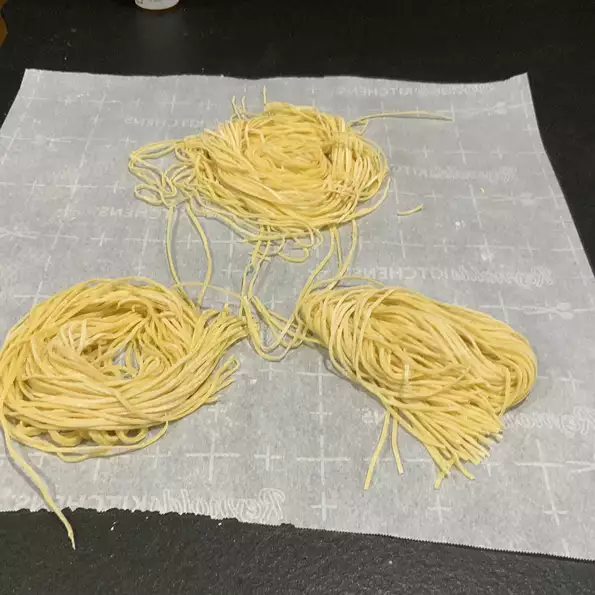

Homemade Pasta

Description
Recipe to make fresh homemade pasta.
Recipe taken from allrecipes.com
Ingredients
- 1 egg beaten
- 1/2 taspoon salt
- 1 cup of all purpose flour
- 2 tablespoons of water
Steps
-
In a medium size bowl, combine flour and salt. Make a well in the flour, add the slightly beaten egg, and mix.
The mixture should form a stiff dough. if needed, stir in 1 to 2 tablespoons of water.
-
On a lightly floured surface, knead dough for about 3 to 4 minutes. With a pasta machine or by hand roll dough out to desired thinness.
Use a machine or knife to cut into strips of desired width.